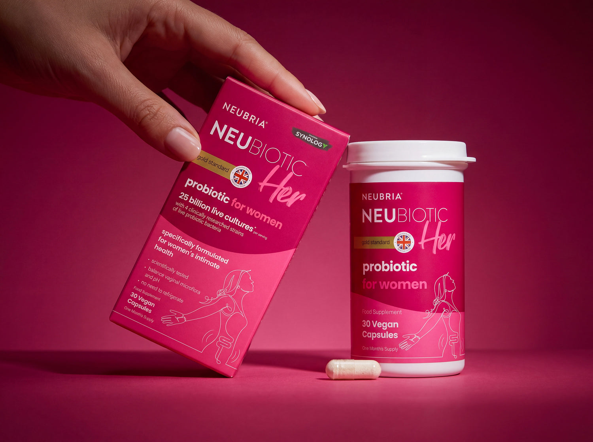

Natural vitamins and supplements for mind and body
Neubria is a UK science led supplement brand (founded 2018, part of Latium Consumer Brands) sold on neubria.com, at Holland & Barrett and Boots. This system is built for NeuBiotic Her, a once a day women's friendly bacteria capsule (£19.95, or £16.96 on subscribe and save; 4.67 out of 5 from 52 Holland & Barrett reviews), across Meta static ads (1:1 and 4:5) and the product landing page. UK market only. Version 2, 23 Oct 2026, built from the brand and product enrichment.
The look: white pages, Neubria pink for action, NeuBiotic berry for storytelling, Poppins throughout, square imagery, pill buttons, flat surfaces.

Named swatches, exact hex
#F5147ENav bar, plus mark, links, badges#FA1988One full bleed band per page, ad backgrounds#FF009CAdd to basket and stars only#81083ANeuBiotic Her bands, icons, stats#990945Berry hover and contrast#13040DHeadings, dark pills, outlines#191919Logo, accordion titles#323232Paragraphs#4B4B4BSecondary text#777777Dividers, meta#BBBBBBInputs, thumbnails#F2F2F2Alternate band#26272AUtility bar, footer#E2E7C9Characteristic pill#E4AB91Characteristic pill#E2B7CDCharacteristic pill#EB001BForm errors#3A884BConfirmations#007BBCNoticesPoppins, one family only
The real site face, loaded from Google Fonts. Headings run at 400 like the live theme; 600 is for hero and ad headlines, 700 for stat numerals.
How Neubria writes
- Science led, plain and measured, warm and reassuring, premium without hype (measured across 452 reviews: hype words under 1%).
- "We" for Neubria, "you" for the reader. Contractions yes. Numerals always. UK spelling. One idea per ad.
- Sentence case for every headline. No em dashes, no hyphenated compound modifiers. Names exactly: Neubria, NeuBiotic Her.
- Claims in the site's own words only (CAP Code 15): "Specially formulated for women's intimate health", "4 clinically researched strains", "25 billion live cultures per capsule", "100% vegan", "one a day", "no need to refrigerate". The microflora and pH line is landing page only until the adviser confirms; the colonisation line is landing page and Google Search only, never Meta.
- "Probiotic" stays in Meta headlines on Alex's decision, paired with a composition fact; in GB it is a general health claim and the risk is recorded.
- Meta: 18+, no body or hygiene inferiority, never imply the reader has a condition, no time boxed outcomes, no pregnancy line, never name a life stage.
- Proof is one sourced figure: 4.67 out of 5 from 52 Holland & Barrett reviews. Lead with £16.96 on subscription; no delivery promise on it. Close every buying surface with "Always read the label before use."
Never write
- treat, cure, prevent, heal, fix, relief from
- any named condition (the ones customers mention in reviews)
- miracle, guaranteed, instant, life changing, results in N days
- verified reviews, the shop wide review count
- free delivery on the subscription price; a per day price before the pack size is confirmed
- pills (say capsules), medicine (say food supplement), doctor recommended
- any transcription variant of the brand or product name
Used and never used
- Used: the claim icons, white outline in a ring on berry (vegan, gluten free, yeast free, dairy free; pregnancy and menopause held off ads until confirmed); the plus in a circle as bullet and toggle; 2px outline UI icons; pink stars beside the sourced figure.
- Never: emoji, icon fonts, filled or multicolour icons, decorative icons, pink recoloured claim icons.
Square media, pill buttons, flat
- Page width 1200px; gutters 80 / 40 / 30px; sections 64px desktop, 40px mobile; colour bands butt together.
- 0px radius for media, cards, inputs, tables. 38px pills for every button and chip. 50% for icon circles.
- No shadows, except popups at 5%.
- Photography is always the real pack, on white or on a pink to berry studio backdrop.
Gaps to close with Neubria
- Logo SVGs are traced from a 236 x 47 PNG with the ® redrawn: supply the master vector wordmark, mono and reverse variants, lockups.
- Footer lockup with pink plus exists only as a small PNG: confirm it is a formal variant.
- Poppins loads from Google Fonts (same family as the site); weights 300, 500 and 600 were added beyond the site's 400 and 700; no font files held.
- Pack script "Her" has no font equivalent: shown only in photography.
- Pinks: theme #F5147E, #FA1988, #FF009C kept; Firecrawl reads the CTA fill as #F5137D: confirm the official pink.
- Berry #81083A is the web colour; the printed pack reads closer to crimson: confirm the Pantone.
- Button radius: theme and live pill 38px kept; Firecrawl's read says 0px: confirm.
- Success green #3A884B is from the reviews widget, not the theme.
- Claim icons are JPG tiles, not vectors.
- The colonisation claim needs the study and regulatory sign off; the microflora and pH line is held off Meta.
- "Probiotic" in headlines is kept on Alex's decision with the GB risk recorded: the brand's adviser should confirm.
- Pack size, storage line, 25bn at end of shelf life, strain studies, the post 6th order discount tier, the pregnancy and menopause tiles: open gaps, none in copy until confirmed.
- Mandatory label statements not found on the site: confirm from the pack.
- Free UK shipping applies above £20; the £16.96 subscription is below it: no delivery line on that price.
- Stockist logos need Holland & Barrett and Boots permission.
- Blog banner photography licence unverified: the four photographed adults are not used.